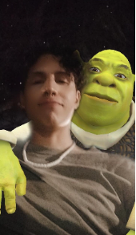

Ivan Joshue Medrano Rio


Soy Ivan Joshue Medrano Rios, me conocen como el Ivancho, tengo 26 años, nací el 28 de enero de 1996, soy de Colima y soy Acuario. Tuve mi formación de Kinder y Primaria en la Juan Jose Rios, despues empece a estudiar en la Jose Vasconcelos en el turno matutino donde empecé a desarrollar afinidad por las computadoras, y al graduarme ingrese al Bachillerato Técnico No. 4 de la Universidad de Colima. Mis gustos son los videojuegos, leer novelas gráficas, hacer ejercicio todos los días, ver muchas películas de cine de culto, en especial las películas de Shrek.